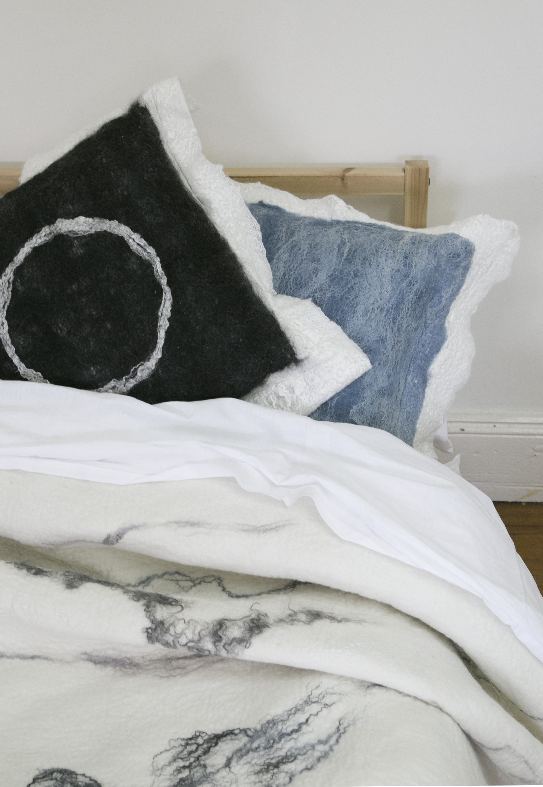

Bowerbirds - The Boweress
Organic materials meet high fashion
26 June, 2016
Firstly thank you for allowing me to conduct this interview; it’s always nice to see how people’s lives reflect the person as they are always such a public/ private mix of things.
Tell me a little bit about your background and how you ended up with your own design brand
I have a Bachelor of Design from UNSW, and it was during my time studying there, whilst flicking through the pages of a magazine in a dental surgery that I first became aware of felt as a potential creative medium for my own art. Further exploration lead me to Dutch fibre artist Claudy Jongstra. Her work and professional ethos resonated with me deeply, and so I decided I would attempt to intern at her studio. Thankfully she accepted me and I had a wonderful four-month sojourn in Friesland, the Netherlands where I spent my days learning many exciting and wonderful things about wool, fibre and natural dyeing processes and techniques.
Grace Wood Designs is a singular project, how do you find working by yourself for yourself?
Working for oneself is a challenge. it requires a lot of organization and discipline to make it happen. You can’t really afford to procrastinate too much, because the only person making sure you get the job done is you. Being reasonably self-motivated is helpful in this scenario.
I enjoy the time I spend alone in my studio. I know some people struggle with the isolation but I relish time in my own head to think and explore and mull over uninterrupted. But there is such a thing as too much time in my own head, so I do make sure that I try to balance all that alone time with seeing my friends and family, and trying to have a fun time whenever possible!
Do you collaborate?
Yes, collaboration has been a very welcome new experience and challenge. Currently I am collaborating with menswear label Shhorn. I was commissioned to produce fabric for his first collection, FW16, and am currently working on fabric for his second, SS17. Recently we were nominated for the International Woolmark Prize so we are also developing fabric and designs for that competition collection which will go before a judging panel on July 6th. I am really enjoying the exchange of ideas and the conversation, and the supportive environment that has developed between us.
Where do you draw inspiration?
Colour and texture, shape and form, it’s all around in nature and structure. Emotional responses, poetry, music – fantasy. I think creating a fantasy is really important for my creative process, to imagine what might be possible, to create what is meaningful.
Take us through the design process, how does an object come to fruition?
There is no real structure – I am informed by this fantasy process, and this might present a colour or a shape or a concept to me. I might sketch a little or create a mood board. I take a lot of photographs of anything that inspires me visually, so that could be of a passage in a book or a cloud formation. Just the fibres themselves can be very inspiring and when I have a new bag of rare fleeces all sorts of possibilities surface.
Is it the process or product that drives you?
The process drives me but at the same time I am always conscious of the end result. Process is really important for risk taking, learning, exploring and discovering. It’s play! And it’s really the fun part. Of course at the end of the day the product has to be beautiful so that the customer enjoys it, and so that I am happy to sell it to the customer. When I work on my own creative projects, I am much more experimental.
Favourite Item produced to date, or favourite design?
I love my Burnt Bush bedcover, Witching Hour cushion cover, Peace Out wall hanging and my oversized scarves that kind of act like blankets.
Moving along to spaces and places…Being from the Mountains how does this influence your design?
The mountains are a great source of inspiration, being a home and a shelter, a refuge from bright lights and this incredible natural landscape full of ancient history. My Burnt Bush bedcover and cushion cover were inspired by the appearance and feeling of the bush after the bushfires – burnt blackened trees and shrubs, grey gnarled twigs and bark. I think there is also a sense of calm and space that can be sensed in the mountains, something I try to instill a little in my work.
I think that kids use their imagination to create a space to withdraw in; somehow they will always find a space that’s theirs.Did you have a bowery growing up, a consistent place/ space throughout your life?
I always liked climbing trees, rocks or mountains, and sitting right up the top looking out over the world.
I think finding this space becomes harder to find as we get older…do you agree?
Well yes, I sadly climb trees very rarely now. We have less time and space as adults to explore and be playful and free. It’s difficult to put aside time to spend doing the things we enjoy, without a sense of guilt. It’s a terrible shame!
Do you think the idea of a bower room is a necessity for the modern woman?
I think it’s a lovely idea. It’s kind of like an alternative option to the shed/man-cave that men have traditionally had to retreat to. Man or woman should be allowed access to a shed or bowery, whichever they prefer! Any kind of refuge filled with the things that you enjoy and take pleasure from is a worthy thing indeed.
Obviously the Blue Mountains are a kind of retreat in themselves – do you have a studio or a place you go that’s intimately yours within the mountains?
My studio is definitely my retreat, and then the bush around me is an extended area I can utilize at will.
Does this space change to due to the time of day? I feel that rooms/ spaces can have different feelings depending on the time… how does this affect your workflow?
The light changes and that certainly plays a part in how and when I work. Good natural light is really important to me so I try to utilize the times of day when it is strongest in the studio. This is especially important during winter when the days are shorter. I feel light also plays a really big part in how drawn I am to a space. If I can’t see properly I find it very frustrating.
When looking at bowerys in general, space of any kind, what is more important to you Form and aesthetic or function?
Function is definitely fundamental to me, but I think good design ties aesthetic intrinsically to function.
I understand how tricky it can be to keep order and function in a working space full of creativity.How do you create a functioning environment with that you work in?
It’s a constant state of flux in my studio. There is continuous movement and rearrangement, water and fibre and mess. I can’t say yet that I have mastered it but it is my hope that one day I will.
List 5 items that are essential to your bowery
Light
Music
Fresh clear air
Plants
Windows
Top 5 female influencers?
My mum
Claudy Jongstra
Frida Kahlo
Cat Power
Enid Blyton
Life’s Mission statement
I hope to always be curious, to continue to learn, to feel and live and love deeply and to stand for freedom and the equal rights for all human beings.
Favourite spots in the Blue Mountains?
Flat rock, Ingar, Paradise, Blackheath
Twitter or Instagram?
Instagram for my work because it’s all about the visuals
Facebook or Pinterest?
I am a little overwhelmed with all the social media platforms thus for now FB because it’s easy.
Favourite word?
Bittersweet
Most used word?
Lovely
Bath or shower?
Bath!
Tea or Coffee?
I love both
What’s something you’re looking forward to this year?
Adventure, anywhere!
Grace was recently a finalist in woolmark prize
Photography by Grace Wood unless stated otherwise.
